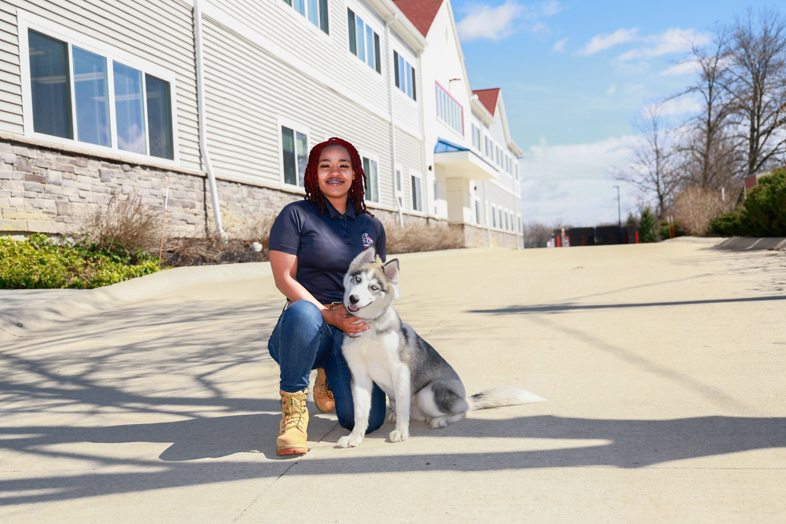

Aryson Whorley
Atlanta, GA
Aryson brings veterinary clinic and dog daycare experience, plus a passion for helping owners see what training can change.

Atlanta, GA
Aryson brings veterinary clinic and dog daycare experience, plus a passion for helping owners see what training can change.
Born in Hiroshima, Japan, and raised in Adel, Georgia, Aryson Whorley brings a unique perspective, strong work ethic, and genuine passion for helping both dogs and their owners succeed. Now based in the Atlanta, Georgia area, Aryson is dedicated to building stronger relationships between people and their canine companions through effective training and clear communication. Aryson's journey into professional dog training began after discovering Lorenzo's Dog Training Team through an Instagram reel.
After becoming a client and learning more about the organization's mission and training philosophy, Aryson quickly developed a deep appreciation for the impact that quality dog training can have on families and their pets. Inspired by the results and the purpose behind the program, joining Lorenzo's Dog Training Team became a natural next step. Prior to becoming a trainer, Aryson gained valuable hands-on experience working in veterinary clinics and dog daycare environments.
These experiences provided extensive exposure to canine behavior, animal care, and client interaction, helping to develop the skills necessary to work effectively with dogs of all ages, breeds, and temperaments. Aryson's passion for training is rooted in a desire to help people—especially those who may not even realize how much a well-trained dog can improve their daily lives. Whether helping owners overcome behavioral challenges, build confidence in their dogs, or strengthen the bond they share, Aryson is committed to creating positive and lasting results.
Outside of dog training, Aryson enjoys drawing, writing music, and exploring the scientific principles that shape the world around us. This combination of creativity and curiosity contributes to a thoughtful, analytical approach to both training and problem-solving. With a passion for education, a background in animal care, and a commitment to helping both dogs and their owners thrive, Aryson is proud to be a part of Lorenzo's Dog Training Team and looks forward to making a positive difference in every family served.
Send your request directly to Lorenzo's office with Aryson Whorley already assigned as the source trainer.